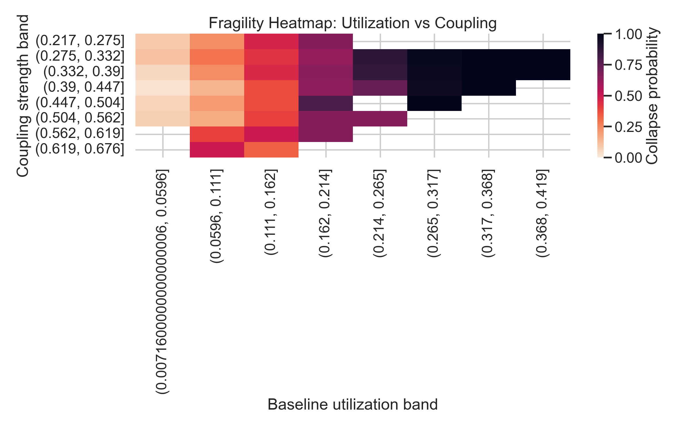
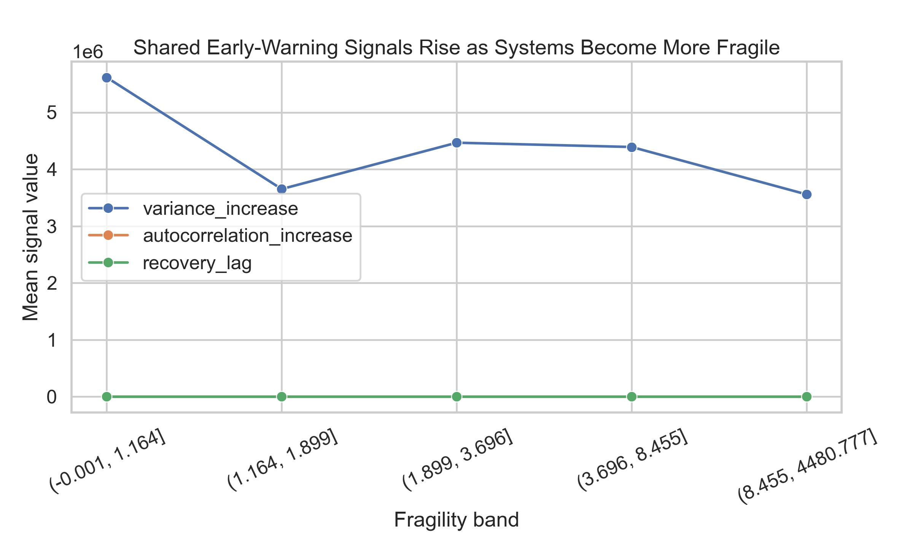

The best visuals from the flagship and follow-up studies.
These are the figures that carry the project publicly: the cross-domain threshold, the controlled coupling refinement, the early-warning story, and the healthcare narrative.

Main result
Best single summary figure for README, portfolio, and talks.

Collapse overlay
Cross-domain collapse curves over baseline utilization.

Phase transition by topology
Family-level threshold curves with critical points called out.

Fragility heatmap
Collapse regions over utilization and coupling bands.

Early-warning signals
Variance growth and recovery lag separate collapse-prone systems before failure.

Feature importance and laws
Utilization dominates, while structural features refine collapse risk.

Controlled thresholds
The follow-up sweep that isolates utilization and coupling directly.

Threshold shift by coupling
Threshold movement exists, but it is modest compared with the first-order utilization effect.

Failure margin
The strongest operational follow-up figure: higher coupling narrows the shock buffer to failure.

Healthcare case study
Concrete baseline versus collapse versus intervention narrative for demos.

Healthcare threshold validation
The utilization cliff reappears in a more intuitive arrival-multiplier setting.

Follow-up main result
The cleanest one-page expression of the coupling refinement.